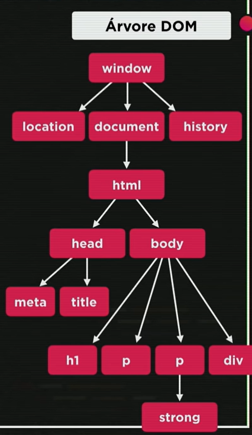

DOM = Documento Object Model - Este é o parágrafo 1 (equivale a 0) e a cor original era rgba(255, 28, 196, 0.719) e não este 'blue'
A cor original do background-color era um bege
É um conjunto de objetos dentro do navegador que permitem realizar ações nele.
Aqui vai o resultado
A raiz é "window". Dentro dela há outras três partes centrais:
"location"
"document"
"history"
Dentro de document temos "html".
"html" é parent de "head" and "body" e eles são child de "html"
Aqui temos um exemplo disso:
Aqui faço o uso desses objetos:
O script de cima era:
window.document.write('Olá mundo. <br>');
window.document.write(window.document.URL);
Abaixo, vou fazer uma div:
Abaixo, mais um código executado, o qual alterou as propriedades iniciais deste website (OBS, a id deste parágrafo é 'msg'):
Nesses casos, eu usie as Tags para modificar os elementos, mas é possível realizar isto
por meio do ID, Nome, Classe e Seletor
A melhor forma de fazer seleções, segundo recomendações, é por Selector, Seletor, quando possível.
Exemplo:
Além do primeiro código, já mostrado, também foram usados os códigos:
var corpo = window.document.body (armazena em "corpo" os child de body)
var p1 = window.documet.getElementByTagName('p')[0] (selecione a primeira (0) tag p)
p1.style.color = 'blue' (troca a cor do parágrafo para blue)
corpo.style.backgroud = 'darkblue' (mudou a cor para um azul horrível)
window.document.write(p1.innerText) (Escreve o texto interno (inner) presente em p1)
O último código foi:
var d = window.document.querySelector('div#msg') (a var d usa um seletor especificado por "div" para achar a Id #, como IDs são singulares, não é preciso especificá-la por meio de colchetes [n])
d.style.color = 'blue' (Altero a cor da minha variável para blue)
A cor que o script primeiro alterou era um lixo, vou voltar para a original com outro script, este:
var corpo-de-fundo = window.document.querySelector('body')
corpo-de-fundo.style.background = 'rgba(255, 228, 196, 0.719)'
Na verdade, uma correção: a variável usada foi corpoDeFundo, pois na sintaxe do Js não se aceita "-".